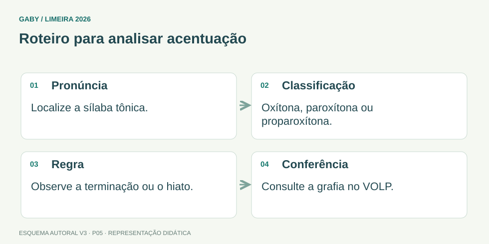

Objetivos do módulo
- Reconhecer grafias corretas de palavras frequentes em provas.
- Aplicar regras de acentuação de oxítonas, paroxítonas e proparoxítonas.
- Distinguir pares como “por que/porque/por quê/porquê”.
- Aplicar as regras de hiato, ditongo aberto, acento diferencial e das formas têm/vêm e veem/creem do Acordo Ortográfico.
- Empregar o hífen com prefixos e em compostos (inclusive com bem e mal) e reconhecer palavras aglutinadas.
- Escolher entre x/ch, g/j, s/z e ç/ss/sc/xc em palavras frequentes e distinguir mal/mau, mas/mais, onde/aonde e homófonos como sessão/seção/cessão.
Roteiro para analisar acentuação

Descrição em texto do esquema
- Pronúncia: Localize a sílaba tônica.
- Classificação: Oxítona, paroxítona ou proparoxítona.
- Regra: Observe a terminação ou o hiato.
- Conferência: Consulte a grafia no VOLP.
Oficina visual · aplique o esquema
Classifique e justifique os acentos de “café”, “lápis” e “médico”.
Atividade autoral complementar da V3. Registre sua resposta; a resolução está no arquivo de gabarito e revisão.
Mapa do conteúdo
1. Ortografia é convenção
A ortografia padroniza a escrita. Nem sempre a pronúncia permite deduzir a grafia; por isso, leitura e contato com palavras recorrentes são essenciais. Em concurso, aparecem trocas de s/z, x/ch, g/j, além de palavras parônimas.
Onde conferir a grafia oficial
- Acordo Ortográfico da Língua Portuguesa (1990), promulgado no Brasil pelo Decreto nº 6.583/2008. O texto é dividido em Bases: a acentuação gráfica está nas Bases VIII a XIII, o trema na Base XIV e o hífen nas Bases XV a XVII.
- VOLP (Vocabulário Ortográfico da Língua Portuguesa), da Academia Brasileira de Letras: registra a grafia oficial e a classe gramatical das palavras. Ele não lista todas as flexões (formas verbais, muitos plurais); para elas vale a regra do Acordo.
A Base III do Acordo explica que a escolha entre letras de mesmo som (ch/x, g/j, s/ss/c/ç, s/z) depende principalmente da história de cada palavra. Por isso, no emprego de letras não há regra que resolva todos os casos: existem tendências úteis (seção 9) e muita memorização pela leitura.
Primeiro passo: a sílaba tônica
Antes de decidir qualquer acento, encontre a sílaba pronunciada com mais força (tônica) e conte a posição dela a partir do fim da palavra.
| Classificação | Posição da sílaba tônica | Exemplos |
|---|---|---|
| monossílabo tônico | palavra de uma sílaba, com força própria | pá, mês, sol, nós |
| oxítona | última | caju, maracujá, rapaz |
| paroxítona | penúltima | mesa, útil, jovem |
| proparoxítona | antepenúltima | sílaba, ônibus, tímido |
Monossílabo átono é a palavra de uma sílaba sem força própria, que se apoia na palavra vizinha: artigos, preposições, conjunções e pronomes oblíquos (o, a, de, em, por, que, me, se). Átonos não recebem acento.
2. Acentuação básica
| Classe | Regra central | Exemplos |
|---|---|---|
| Oxítonas | acentuam-se terminações a(s), e(s), o(s), em(ens) | café, cipó, também |
| Paroxítonas | acentuam-se as terminadas em l, n, r, x, ps, ã(s), ão(s), ei(s), i(s), um, uns, us e em ditongo crescente (detalhes abaixo) | fácil, órgão, júri |
| Proparoxítonas | todas são acentuadas | lâmpada, público, matemática |
Monossílabos tônicos e oxítonas
Os monossílabos tônicos seguem as mesmas terminações das oxítonas (o próprio Acordo, na Base VIII, dá exemplos como já, só e pôs). Recebem acento:
| Terminação | Acento | Exemplos |
|---|---|---|
| a(s), e(s), o(s) com som aberto | agudo | pá, já, pé, só, maracujá, jacaré, cipó |
| e(s), o(s) com som fechado | circunflexo | mês, três, você, cortês, avô, robô |
| em, ens (oxítonas de mais de uma sílaba) | agudo | armazém, também, parabéns |
| ditongos abertos éi, éu, ói, seguidos ou não de s | agudo | réis, papéis, céu, troféu, dói, herói |
Não se acentuam as oxítonas terminadas em i, u, r, l, z ou im: caqui, caju, abacaxi, colher, funil, rapaz, jardim; nem os infinitivos (partir, vender). A exceção são o i e o u tônicos em hiato, como em açaí (seção 3). Os monossílabos em -em também ficam sem acento no singular: tem, vem, bem, cem, trem.
Paroxítonas
A maioria das paroxítonas não tem acento, porque termina em a, e, o, em ou ens (mesa, ponte, livro, jovem, imagens). Recebem acento as terminadas em:
| Terminação | Exemplos |
|---|---|
| l | útil, amável, fóssil |
| n | abdômen, líquen, éden |
| r | revólver, açúcar, caráter |
| x | látex, córtex, índex |
| ps | bíceps, fórceps |
| ã(s), ão(s) | órfã, órgão, sótão |
| ei(s) | jóquei, fáceis, amáveis |
| i(s) | júri, lápis, íris |
| um, uns | álbum, álbuns |
| us | vírus, ônus |
| ditongo crescente (ea, eo, ia, ie, io, oa, ua, uo) | história, série, mágoa, experiência, excelência |
Singular em -n com acento, plural em -ens sem acento
A paroxítona terminada em n leva acento (abdômen, líquen). No plural em -ens ela passa a terminar em ens, terminação de paroxítona que não se acentua: abdômen → abdomens; líquen → liquens. O VOLP também registra plurais em -enes, que viram proparoxítonas e mantêm o acento (abdômenes). O nome do sinal estudado na seção 8 segue a mesma regra. As palavras terminadas em -em fazem plural em -ens, também sem acento: jovem → jovens; item → itens; nuvem → nuvens.
Proparoxítonas
Todas as proparoxítonas são acentuadas, sem exceção (Base XI): acento agudo quando a vogal tônica é aberta (sílaba, tímido, árvore) e circunflexo quando é fechada (cômodo, ônibus, relâmpago). Teste prático: se a tônica é a antepenúltima sílaba, o acento é obrigatório.
Derivados em -mente e com sufixo iniciado por z
A Base XIII do Acordo retira o acento da palavra primitiva quando se forma:
- advérbio em -mente: fácil → facilmente; ávido → avidamente; lúcido → lucidamente; português → portuguesmente;
- derivado com sufixo começado por z (-zinho, -zito, -zada, -zeiro): café → cafezinho; só → sozinho; avó → avozinha; chá → chazeiro.
Motivo: no derivado, a sílaba tônica principal passa para o sufixo (fa-cil-men-te, ca-fe-zi-nho), e a palavra nova segue as regras gerais: é paroxítona terminada em e ou o, sem acento.
3. Hiato e ditongo
Em hiatos, “i” e “u” tônicos podem receber acento quando formam sílaba sozinhos ou com “s”, observadas exceções. Exemplos tradicionais: saída, baú. Ditongos abertos em palavras oxítonas como “herói” e “chapéu” recebem acento; em paroxítonas, formas como “ideia” não recebem mais acento.
I e u tônicos em hiato (Base X)
Hiato é o encontro de duas vogais em sílabas diferentes (sa-í-da). Leva acento agudo o i ou o u tônico que forma hiato com a vogal anterior e fica sozinho na sílaba ou acompanhado apenas de s: vi-ú-va, sa-ú-de, con-te-ú-do, fa-ís-ca, e-go-ís-ta, Lu-ís. A regra vale também para oxítonas: a-ça-í, Ja-ca-re-í.
| Caso sem acento | Exemplos | Por quê |
|---|---|---|
| o i/u forma sílaba com l, m, n, r ou z | ruim (ru-im), Raul (Ra-ul), raiz (ra-iz) | a sílaba do i/u termina em consoante diferente de s |
| a sílaba seguinte começa por nh | moinho, bainha | exceção expressa da Base X |
| o i/u vem depois de ditongo, em paroxítona | feiura, baiuca, bocaiuva | o acento caiu com o Acordo (Base X, 4º) |
Compare as formas: raiz (ra-iz: sílaba fechada por z, sem acento) × raízes (ra-í-zes: o í ficou sozinho, com acento). O mesmo raciocínio explica juiz × juíza.
Exceção da exceção: nas oxítonas, o i/u depois de ditongo continua acentuado: Piauí, tuiuiú (Base X, 5º).
Teste prático: separe as sílabas. Se o i/u tônico ficou sozinho (ou só com s), acentue, salvo antes de nh e depois de ditongo em paroxítona.
Ditongo, não hiato: fortuito, gratuito, muito
Em fortuito, gratuito, circuito e intuito, o grupo “ui” é ditongo na sílaba tônica: for-tui-to, gra-tui-to. São paroxítonas terminadas em o, por isso não têm acento (grafia do VOLP). Escrever “fortuíto” ou “gratuíto” é erro: o acento só caberia se houvesse hiato com i tônico, como em cons-tru-í-do e ru-í-do. A gramática normativa tradicional também recomenda pronunciar o ditongo (gra-tui-to), e não o hiato.
Em muito, o VOLP indica que o ditongo é pronunciado nasalizado, mas a grafia não tem n: “muinto” é erro.
Ditongos abertos éi, éu, ói
| Posição do ditongo | Regra | Exemplos |
|---|---|---|
| última sílaba (oxítonas) e monossílabos tônicos | acento agudo (Base VIII) | anéis, papéis, réis, céu, troféu, dói, herói |
| penúltima sílaba (paroxítonas) | sem acento desde o Acordo (Base IX, 3º) | ideia, plateia, colmeia, assembleia, jiboia, joia, boia, heroico, paranoia |
Teste: em pla-tei-a, o ditongo está na penúltima sílaba (paroxítona, sem acento); em pa-péis, está na última (oxítona, com acento). Cuidado: a paroxítona perde o acento por causa do ditongo, mas continua acentuada se cair em outra regra: destróier (paroxítona terminada em r) mantém o acento no VOLP.
Hiatos ee e oo: sem circunflexo
O Acordo retirou o circunflexo de dois casos:
- formas verbais terminadas em -eem, 3ª pessoa do plural de crer, dar, ler, ver e derivados (Base IX, 7º): creem, deem, leem, veem, releem, preveem, descreem;
- o primeiro o do hiato oo (Base IX, 8º): voo, enjoo, povoo, abençoo.
Não confunda com têm e vêm, que continuam com circunflexo (seção 6).
4. Por que, porque, por quê, porquê
| Forma | Uso típico | Exemplo |
|---|---|---|
| por que | pergunta ou equivalente a “por qual razão” | Por que faltou? |
| porque | resposta/explicação | Faltou porque adoeceu. |
| por quê | antes de pausa/pontuação | Você faltou por quê? |
| porquê | substantivo, normalmente com determinante | Explique o porquê. |
Como reconhecer cada forma
| Forma | Classe e teste | Exemplo correto | Erro comum |
|---|---|---|---|
| por que | preposição + pronome; troque por “por qual motivo” (perguntas diretas e indiretas) ou por “pelo qual / pela qual” | “Não entendi por que o ônibus atrasou.” / “O caminho por que passei estava em obras.” | “Não entendi porque o ônibus atrasou.” (cabe “por qual motivo”) |
| por quê | mesmo valor, mas no fim da frase ou antes de pausa forte: o “que” fica tônico e ganha acento | “O passeio foi cancelado, e ninguém disse por quê.” | “ninguém disse por que.” |
| porque | conjunção de causa ou explicação; troque por “pois” ou “uma vez que” | “Levei guarda-chuva porque o céu estava fechado.” | “Levei guarda-chuva por que o céu estava fechado.” |
| porquê | substantivo (= o motivo); vem com artigo ou outro determinante e admite plural | “Ela quis saber os porquês da decisão.” | “Ela quis saber os por quês.” |
Pegadinha: uma pergunta pode conter porque quando já sugere a causa: “Você chegou tarde porque perdeu o ônibus?” (equivale a “pois perdeu o ônibus?”). O VOLP registra porquê como substantivo e porque como conjunção.
5. Há x a
“Há” pode indicar existência ou tempo decorrido: “há vagas”; “há dois anos”. “A” pode marcar tempo futuro ou distância: “daqui a dois dias”; “a três quilômetros”.
Teste do “faz”
Se for possível trocar por faz, a ideia é de tempo decorrido e se usa há, do verbo haver: “Trabalho aqui há três anos” = “faz três anos”. Se o tempo é futuro ou a ideia é de distância, usa-se a preposição a.
| Situação | Forma | Exemplo correto | Erro comum |
|---|---|---|---|
| tempo decorrido | há | “Ela se mudou há duas semanas.” | “Ela se mudou a duas semanas.” |
| tempo futuro | a (daqui a) | “As inscrições abrem daqui a um mês.” | “daqui há um mês” |
| distância | a | “O posto fica a cinco quilômetros.” | “fica há cinco quilômetros” |
| existência | há (= existe) | “Há vagas no estacionamento.” | “A vagas no estacionamento.” |
O Manual de Redação da Presidência da República (seção 12.1) observa que, com “há” de tempo passado, a palavra “atrás” é dispensável: “há dois anos atrás” é redundante; basta “há dois anos”.
6. Acento diferencial e formas verbais
Acento diferencial é o que serve apenas para distinguir palavras de mesma grafia. O Acordo eliminou quase todos; ficaram poucos casos, muito cobrados.
| Par | Situação | Exemplo |
|---|---|---|
| pôr (verbo) × por (preposição) | obrigatório (Base VIII, 3º) | “Vou pôr a mesa.” / “Passei por lá.” |
| pôde (pretérito) × pode (presente) | obrigatório (Base IX, 6º) | “Na semana passada ele não pôde viajar; agora pode.” |
| têm, vêm (plural) × tem, vem (singular) | obrigatório (Base IX, 5º) | “A loja tem desconto; as lojas têm desconto.” / “O ônibus vem cheio; os ônibus vêm cheios.” |
| fôrma (molde) × forma (formato; verbo formar) | facultativo (Base IX, 6º) | “a fôrma de bolo” ou “a forma de bolo” |
| dêmos (presente do subjuntivo) × demos (pretérito) | facultativo (Base IX, 6º) | “É preciso que dêmos (ou demos) o recado hoje.” |
Ter, vir e derivados
| Verbo | 3ª pessoa do singular | 3ª pessoa do plural |
|---|---|---|
| ter | tem | têm |
| vir | vem | vêm |
| conter, deter, manter, obter | contém, detém, mantém, obtém | contêm, detêm, mantêm, obtêm |
| provir, intervir, convir | provém, intervém, convém | provêm, intervêm, convêm |
Os derivados têm acento agudo no singular porque são oxítonas terminadas em -em (Base VIII, 1º); no plural, o circunflexo marca a diferença (Base IX, 5º). Não confunda com o verbo ver: ele vê, eles veem (sem acento). Assim, “eles vêm” = chegam (vir) e “eles veem” = enxergam (ver). As formas “vêem” e “têem” não existem na grafia atual.
Diferenciais que caíram
Desde o Acordo, não se acentuam para distinguir (Base IX, 9º): para (do verbo parar) × para (preposição); pela e pelo (do verbo pelar; pelo = cabelo) × pela e pelo (preposição + artigo); polo (extremidade). O VOLP registra também pera (fruta) sem acento. Exemplos: “O trem para na estação central”; “O cachorro tem pelo curto”.
Teste prático: com acento diferencial obrigatório restam pôr e pôde, além de têm e vêm (e derivados), que marcam o plural. “Pára”, “pêlo” e “pólo” são grafias desatualizadas.
7. Trema
O trema (¨) indicava que o u dos grupos gue, gui, que, qui era pronunciado. A Base XIV do Acordo suprimiu o trema em palavras portuguesas e aportuguesadas. A pronúncia não mudou; só o sinal saiu.
| Grafia antiga | Grafia atual |
|---|---|
| cinqüenta | cinquenta |
| tranqüilo | tranquilo |
| agüentar | aguentar |
| lingüista | linguista |
| freqüente | frequente |
O trema só se mantém em palavras derivadas de nomes próprios estrangeiros e nos próprios nomes: Müller, mülleriano; Hübner, hübneriano. Na prova, qualquer palavra portuguesa com ü está com grafia desatualizada.
8. Hífen
As regras estão nas Bases XV (compostos) e XVI (prefixos) do Acordo e são resumidas na seção 9.1 do Manual de Redação da Presidência da República. Separe dois grupos: palavras com prefixo (ou elementos como auto-, micro-, semi-, mini-) e palavras compostas.
Prefixos: compare o fim do prefixo com o início da palavra seguinte
| Caso | Regra | Exemplo correto | Erro comum |
|---|---|---|---|
| segunda palavra começa por h | hífen | anti-herói, super-homem, sobre-humano, pré-história | antiherói, superomem |
| prefixo termina na mesma vogal que inicia a segunda palavra | hífen | anti-inflamatório, contra-ataque, auto-observação, semi-interno | antiinflamatório |
| prefixo termina em vogal e a segunda palavra começa por vogal diferente | junta, sem hífen | autoestima, infraestrutura, extraoficial, semiaberto | auto-estima |
| prefixo termina em vogal e a segunda palavra começa por r ou s | junta e dobra o r ou o s | minissaia, contrassenha, ultrassom, autorretrato, semirreta | mini-saia, contra-senha, autoretrato |
| hiper-, inter-, super- + palavra iniciada por r | hífen | hiper-realista, inter-racial, super-requintado | superrequintado |
| prefixo terminado em consoante + consoante diferente ou vogal | junta | supermercado, intermunicipal, hiperativo | super-mercado |
| ex- (estado anterior), vice-, sota-, soto- | sempre hífen | ex-diretor, vice-presidente, vice-diretor | vice presidente |
| pós-, pré-, pró- tônicos | hífen | pós-graduação, pré-vestibular, pró-reitor | compare as formas átonas, aglutinadas: pospor, prever, promover |
O prefixo co- costuma juntar-se mesmo antes de o: coautor, cooperar, coordenar. Os prefixos e elementos como super-, auto-, micro- e semi- não levam acento gráfico; os únicos acentuados são pós-, pré- e pró-.
Compostos
| Caso | Regra | Exemplos |
|---|---|---|
| palavras unidas que formam um sentido novo e mantêm a tonicidade própria | hífen | guarda-roupa, segunda-feira, arco-íris, decreto-lei |
| nomes de espécies de plantas e animais | hífen | erva-doce, beija-flor, bem-te-vi |
| compostos em que se perdeu a noção de composição | aglutinados, sem hífen | girassol, mandachuva, pontapé, paraquedas, paraquedista |
| além-, aquém-, recém-, sem- | hífen | além-mar, recém-nascido, sem-número |
| locuções (com elemento de ligação) | sem hífen | fim de semana, sala de jantar, cor de vinho |
| locuções consagradas pelo uso (exceções) | hífen | cor-de-rosa, pé-de-meia, água-de-colônia, mais-que-perfeito |
Compostos com bem e mal
| Elemento | Antes de vogal ou h | Antes de consoante |
|---|---|---|
| bem | hífen: bem-estar, bem-amado, bem-humorado | em geral, hífen: bem-vindo, bem-sucedido, bem-visto; alguns aglutinados: benfeitor, benfazejo |
| mal | hífen: mal-estar, mal-educado, mal-entendido, mal-humorado | junto: malcriado, malvisto, malsucedido |
Teste prático: “mal” só leva hífen antes de vogal ou h; “bem” quase sempre leva. Não confunda o advérbio mal desses compostos com o adjetivo mau (seção 10): “mau humor” é substantivo + adjetivo, escrito separado; “mal-humorado” é adjetivo composto.
9. Emprego de letras
Como a escolha depende da origem da palavra (Base III do Acordo), use as tendências abaixo como pista e, na dúvida, confira no VOLP.
Emprego de x e ch
| Tendência | Exemplos | Exceção ou observação |
|---|---|---|
| x depois de en- inicial | enxada, enxame, enxurrada, enxoval, enxaqueca | ch quando a palavra deriva de outra com ch: encher (de cheio), encharcar (de charco) |
| x depois de me- inicial | mexer, mexerica, mexilhão | mecha |
| x depois de ditongo | caixa, peixe, frouxo, ameixa | — |
| ch, por memorização | chuchu, cochilo, flecha, salsicha, mochila | — |
Emprego de g e j
| Tendência | Exemplos | Exceção ou observação |
|---|---|---|
| g nos substantivos em -agem, -igem, -ugem | garagem, coragem, fuligem, ferrugem | pajem (com j) |
| g nas terminações -ágio, -égio, -ígio, -ógio, -úgio | pedágio, prestígio, relógio, refúgio | — |
| j em todas as formas dos verbos em -jar | viajar → que eles viajem; arranjar → arranje; despejar → despejem; encorajar → encorajem | o j do infinitivo se mantém |
| j nos derivados de palavras com j | laranja → laranjeira; loja → lojista | — |
| por memorização | com g: tigela, megera, gengiva, herege; com j: canjica, majestade, jeito | — |
Viagem × viajem: o VOLP registra viagem (com g) como substantivo e viajem (com j) como forma do verbo viajar. Teste: se cabe artigo (“a viagem”, “uma viagem”), é substantivo; se vem depois de “que” com sujeito (“que vocês viajem”), é verbo.
Emprego de s e z
| Tendência | Exemplos |
|---|---|
| -ês, -esa em adjetivos de origem e em títulos | português, francesa, princesa, duquesa |
| -ez, -eza em substantivos abstratos formados de adjetivos | rápido → rapidez; belo → beleza; lúcido → lucidez |
| -isar quando a palavra de origem tem s | análise → analisar; pesquisa → pesquisar; aviso → avisar; paralisia → paralisar |
| -izar quando a palavra de origem não tem s | real → realizar; útil → utilizar |
Emprego de ç, ss, sc e xc
Todas essas grafias podem representar o mesmo som de “s”. A família da palavra é a melhor pista:
| Verbo | Substantivo | Grafia |
|---|---|---|
| deter, reter, manter (-ter) | detenção, retenção, manutenção | ç |
| ceder, conceder, suceder (-ceder) | cessão, concessão, sucessão | ss |
| agredir, progredir (-gredir) | agressão, progressão | ss |
| imprimir, oprimir (-primir) | impressão, opressão | ss |
| permitir, emitir (-mitir) | permissão, emissão | ss |
A família também conserva a letra da palavra de origem: gesso → engessar. Pela regra tradicional, o ç não inicia palavra nem aparece antes de e ou i (cebola, cidade).
sc, por memorização: nascer, crescer, descer, piscina, consciência, adolescência, disciplina.
xc: a família de exceder e a de exceção começam por exc-. Exceder → excesso, excessivo, excedente; exceção → excepcional; excelente → excelência; também excêntrico e excitar. Observe as duas partes: xc no início e, depois, ss (excesso), ç (exceção) ou pc (excepcional). Em excelência, além do xc, há acento circunflexo, porque a palavra termina em ditongo crescente (ex-ce-lên-cia; seção 2). Faltar o x é erro de letra; faltar o acento é erro de acentuação: são dois erros diferentes.
10. Palavras que se confundem
Mal × mau
| Palavra | Classe | Oposto | Exemplo |
|---|---|---|---|
| mal | advérbio de modo; também substantivo (o mal) e conjunção (= assim que) | bem | “O motor funciona mal.” / “O mal venceu no filme.” / “Mal saímos, começou a chover.” |
| mau | adjetivo: acompanha um substantivo | bom | “Foi um mau negócio.” / “Ele não é mau aluno.” |
Teste prático: troque por bem ou bom. “Funciona mal” → “funciona bem” (mal); “mau negócio” → “bom negócio” (mau). O VOLP registra mal como advérbio, substantivo e conjunção, e mau como adjetivo.
Mas × mais
Mas é conjunção adversativa: liga ideias em oposição e equivale a porém, contudo. Mais indica quantidade ou intensidade e é o oposto de menos. Exemplo: “Estudei mais horas nesta semana, mas ainda não terminei o conteúdo.” Teste: se cabe “porém”, use mas; se cabe “menos” (invertendo o sentido), use mais.
Onde × aonde (visão rápida)
Onde = em que lugar; acompanha verbos de permanência (estar, ficar, morar, trabalhar): “Onde fica o arquivo?”. Aonde = a + onde, a que lugar; acompanha verbos de movimento que pedem a preposição a (ir, chegar, voltar, levar): “Aonde vamos no sábado?”. Teste: se a resposta usa “a” (vamos ao parque), é aonde; se usa “em” (fica na sala 3), é onde. O Manual de Redação (seção 12.2) lembra ainda que onde, como pronome relativo, deve indicar lugar; para outras ideias, use em que, no qual, na qual. A regência dos verbos é estudada na aula de Regência.
Homófonos: mesma pronúncia, grafia e sentido diferentes
| Palavra | Sentido | Exemplo |
|---|---|---|
| sessão | reunião; tempo de duração de uma reunião ou atividade | “a sessão do conselho escolar”; “a sessão de cinema” |
| seção (ou secção) | divisão, setor, parte de um todo | “a seção de recursos humanos”; “a seção 3 desta aula” |
| cessão | ato de ceder | “a cessão do ginásio para a formatura” |
| conserto | reparo, restauração (verbo consertar) | “o conserto do portão” |
| concerto | composição musical e sua execução; também acordo, harmonização (verbo concertar) | “o concerto da orquestra municipal” |
| censo | recenseamento, contagem | “o censo escolar” |
| senso | juízo, entendimento | “bom senso”; “senso crítico” |
Teste prático: ligue à família. Cessão vem de ceder; conserto, de consertar; censo, de recenseamento. Sessão e seção não têm verbo de apoio: memorize “sessão = tempo de reunião” e “seção = parte”. Sentidos conferidos no Manual de Redação (seção 12.1) e no VOLP.
Exemplos resolvidos passo a passo
Exemplo 1
Situação: Complete: “Não sei ___ o documento não chegou; gostaria de entender o ___.”
Exemplo 2
Situação: “Daqui há três dias” está correto?
Exemplo 3
Situação: Justifique a grafia de: cafezinho, plateia, raízes e “as lojas têm”.
Exemplo 4
Situação: Una os elementos, com ou sem hífen: anti + herói; ultra + som; semi + aberto; contra + ataque; super + mercado.
Exemplo 5
Situação: Complete com x ou ch e com g ou j: en_ada; en_er (de cheio); me_ilhão; fuli_em; que eles via_em.
Exemplo 6
Situação: Corrija a frase: “Dormir pouco faz mau à saúde, mais muita gente ignora; a pesquisa saiu a duas semanas.”
Pegadinhas e erros frequentes
- Acentuar “ideia” e “assembleia” pelas regras antigas.
- Confundir há (passado/existência) com a (futuro/distância).
- Usar “porquê” sem função de substantivo.
- Acentuar paroxítonas com ditongo aberto (plateia, jiboia, heroico) e esquecer o acento das oxítonas (papéis, troféu, herói).
- Escrever “vêem”, “lêem” ou “vôo” pela grafia antiga; confundir veem (ver) com vêm (vir).
- Manter acento diferencial que caiu (“pára”, “pêlo”, “pólo”) ou esquecê-lo em pôr e pôde.
- Acentuar o plural em -ens de paroxítonas e os derivados em -mente ou -zinho; o correto é abdomens, liquens, facilmente, cafezinho.
- Acentuar i/u em hiato antes de nh, em sílaba com l, m, n, r, z, ou depois de ditongo em paroxítona (moinho, ruim, feiura).
- Escrever “gratuíto” ou “fortuíto”: o “ui” é ditongo.
- Usar hífen com vogais diferentes (auto-estima) ou quando o r/s deve dobrar (contra-senha); esquecê-lo antes de h e com vogais iguais.
- Trocar x por ch depois de en- (a exceção é encher, de cheio) e escrever com g as formas dos verbos em -jar (que eles viajem).
- Confundir mal/mau, mas/mais, sessão/seção/cessão, conserto/concerto e censo/senso.
Resumo de prova
- Todas as proparoxítonas são acentuadas.
- Oxítonas e paroxítonas seguem terminações específicas.
- “ideia” não tem acento.
- Há = existência/tempo passado; a = futuro/distância.
- Domine os quatro porquês.
- Oxítonas e monossílabos tônicos: a(s), e(s), o(s), em/ens e éi/éu/ói.
- Paroxítonas: l, n, r, x, ps, ã(s), ão(s), ei(s), i(s), um(uns), us e ditongo crescente; plural em -ens sem acento.
- Paroxítona com ditongo aberto ei/oi: sem acento (plateia, jiboia).
- i/u tônico em hiato: acento, salvo antes de nh, em sílaba com l, m, n, r, z e após ditongo em paroxítona.
- Sem circunflexo: creem, deem, leem, veem, voo, enjoo.
- Diferenciais obrigatórios: pôr, pôde, têm, vêm (e contêm, provêm etc.); facultativos: fôrma, dêmos.
- Derivados em -mente e -zinho perdem o acento da primitiva.
- Trema só em nomes estrangeiros e derivados (Müller, mülleriano).
- Hífen: h ou vogal igual → hífen; vogal diferente → junta; r/s → dobra; mal- só antes de vogal ou h.
- x depois de en-, me- e ditongo; g em -agem, -igem, -ugem; j nos verbos em -jar.
- mal/bem, mau/bom; mas = porém, mais = quantidade; onde = em que lugar, aonde = a que lugar.
- sessão = reunião; seção = parte; cessão = ato de ceder; conserto = reparo; concerto = música ou harmonia; censo = contagem; senso = juízo.
Exercícios do módulo
Resolva sem consultar o arquivo de gabarito. As questões são autorais e construídas para treinar os conceitos do edital.
- excessão
- eceção
- excessão
- exceção
- só recebem til
- são acentuadas
- não são acentuadas
- dependem de plural
- idéia
- ideia
- assembléia
- heroi
- por quê
- por que
- porquê
- porque
- porquê
- por quê
- por que
- porque
- por quê
- por que
- porque
- porquê
- Daqui há duas horas sairemos.
- Daqui a duas horas sairemos.
- Há duas horas sairemos.
- A duas horas chegamos ontem.
- existência
- distância
- posse
- futuro
- facil
- publico
- café
- lapis
- sofá
- fácil
- café
- também
Quando terminar, abra Português 05 - Ortografia e Acentuação - Gabarito e Revisão.
Checklist de domínio
- ☐ Reconhecer grafias corretas de palavras frequentes em provas.
- ☐ Aplicar regras de acentuação de oxítonas, paroxítonas e proparoxítonas.
- ☐ Distinguir pares como “por que/porque/por quê/porquê”.
- ☐ Decidir o acento de hiatos, ditongos abertos, -eem/-oo e derivados em -mente/-zinho.
- ☐ Usar corretamente pôr/por, pôde/pode, têm/tem, vêm/vem, veem e reconhecer os diferenciais que caíram.
- ☐ Aplicar as regras do hífen com prefixos, compostos, bem e mal.
- ☐ Escolher x/ch, g/j, s/z, ç/ss/sc/xc nas palavras frequentes.
- ☐ Distinguir mal/mau, mas/mais, onde/aonde, há/a e os homófonos sessão/seção/cessão, conserto/concerto, censo/senso.
Meta do módulo: 80% ou mais nas questões, sem depender de consulta.
Referências e conteúdos auxiliares
- Presidência da República — Manual de Redação, 3ª ediçãoClareza, redação oficial, concordância, regência e pontuação. Referência de apoio; modelos locais podem ter regras próprias.
- Academia Brasileira de Letras — VOLPConsulta de grafia e classe gramatical. O vocabulário não é um dicionário de significados.
- Decreto nº 6.583/2008 — Acordo Ortográfico da Língua Portuguesa (Anexo I)Conferidas as Bases III (homofonia de consoantes), VIII a XI e XIII (acentuação, hiatos, ditongos abertos, -eem/-oo, acento diferencial, derivados em -mente e -zinho), XIV (trema), XV e XVI (hífen). Conferido em 18/11/2026.
- Academia Brasileira de Letras — VOLP (busca)Conferidas as grafias e classes das palavras usadas nos exemplos (por exemplo: plateia, feiura, destróier, fôrma, pera, voo, linguista, micro-ondas, mal-humorado, bem-vindo, paraquedas, enxofre, mecha, pajem, viagem/viajem, tigela, excelência, fortuito, muito, sessão/seção/cessão, conserto/concerto, censo/senso, mal/mau, mas/mais, aonde, porquê) e os plurais abdomens/abdômenes e hifens/hífenes. Conferido em 18/11/2026.
- Presidência da República — Manual de Redação, 3ª edição (seções 9.1, 12.1 e 12.2)Conferidos o resumo das regras do hífen (9.1), os pares a/há, censo/senso, cessão/seção/sessão, concerto/conserto (12.1) e o uso de onde como relativo de lugar (12.2). Conferido em 18/11/2026.
Referências externas de apoio consultadas para a V3 em 27/09/2026. A origem das questões é o material autoral do projeto; estes links não indicam que uma instituição publicou ou validou os exercícios. As páginas externas precisam de internet. Em informática, confira a versão do programa; em legislação, observe o recorte e as regras de atualização do edital.